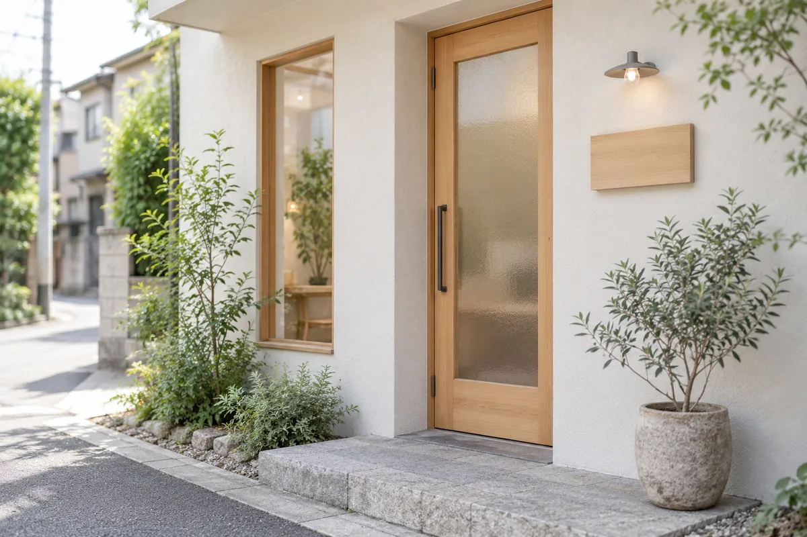
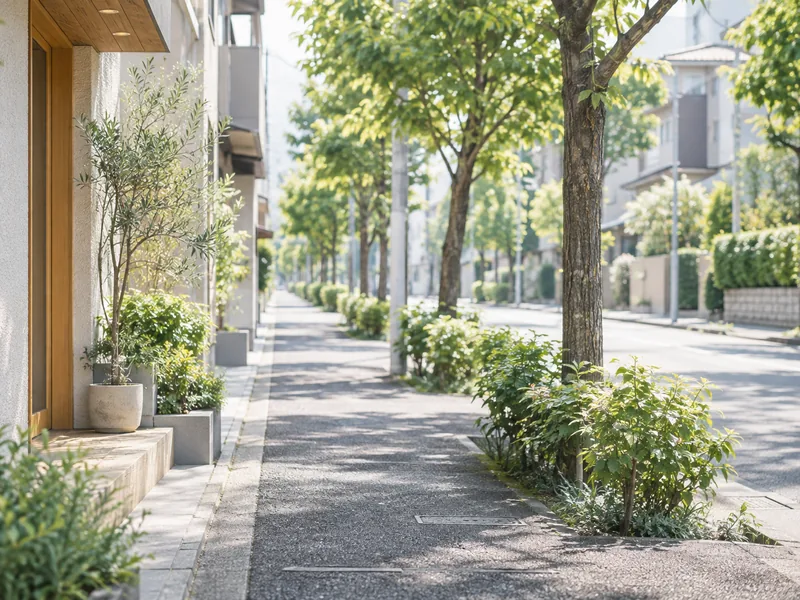

アクセス
Access○○線「○○駅」から徒歩2分。改札を出てからの道順を、線画と写真でご案内します。初めてお越しの方は、出発の前に一度ご覧ください。

院のご案内Clinic Information
- 院名
- あおき鍼灸整体院
AOKI ACUPUNCTURE & SEITAI
- 住所
- 〒000-0000 東京都○○区○○ 1-2-3 ○○ビル 2F
- 電話番号
- 0120-123-456
施術中は留守番電話に切り替わります。お名前とご連絡先をお残しください。
- 最寄駅
- ○○線「○○駅」徒歩2分
- 営業時間
- 平日 10:00〜20:00
土曜 10:00〜18:00 - 定休日
- 日曜・祝日
- 駐車場
- 近隣コインパーキングをご利用ください
地図
大きな地図で見る駅からの道順
改札を出て、大通りを左へ。二つ目の角を右に折れると当院です。信号を渡らずに着きます。
※ 図は道順の目安です。建物・店舗の位置は簡略化しています。
-
南口を出る改札〜南口
改札は一つだけです。出たら右手の南口へ。階段を下りると、正面に大通りが見えます。
-
大通りを左へ2 min
歩道を道なりに進みます。銀行と郵便局を過ぎたところが、二つ目の角です。信号を渡る必要はありません。
-
二つ目の角を右へ15 m
角を折れて15mほど。白い外壁に木の扉の建物、その2階が当院です。1階に看板を出しています。

ご来院にあたって
- 駐車場
- 当院に専用駐車場はございません。二つ目の角を曲がってすぐ左手に、コインパーキング（8台）がございます。夕方は混み合うことがありますので、お車でお越しの際は少し余裕をもってお出かけください。
- バリアフリー
- 当院は建物の2階です。エレベーターがございますので、ベビーカー・車椅子のままお上がりいただけます。段差や移動にご不安のある方は、ご予約の際にひとことお知らせください。1階の入口までお迎えにあがります。